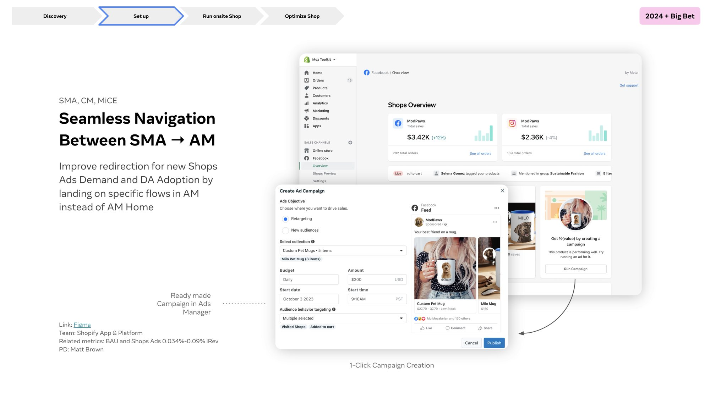
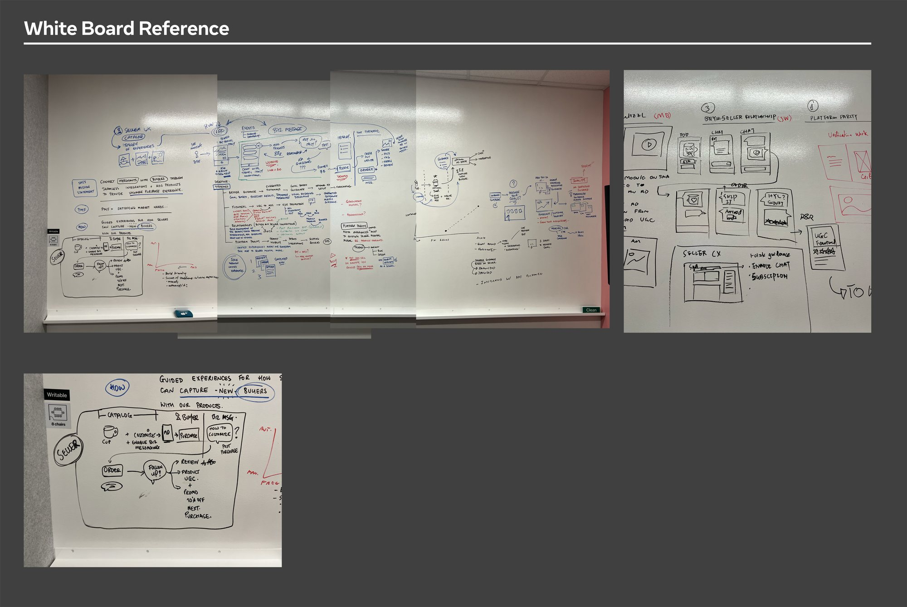
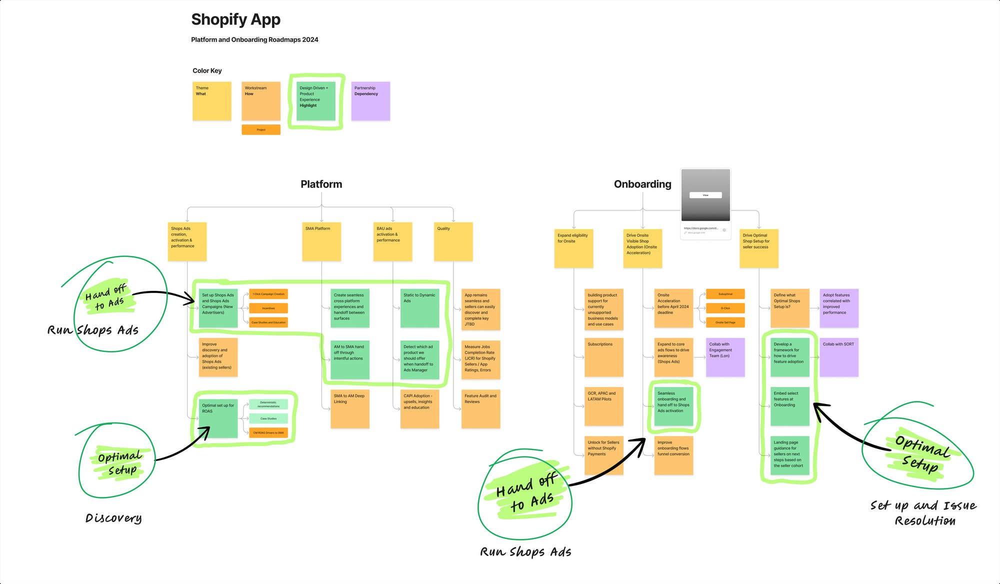
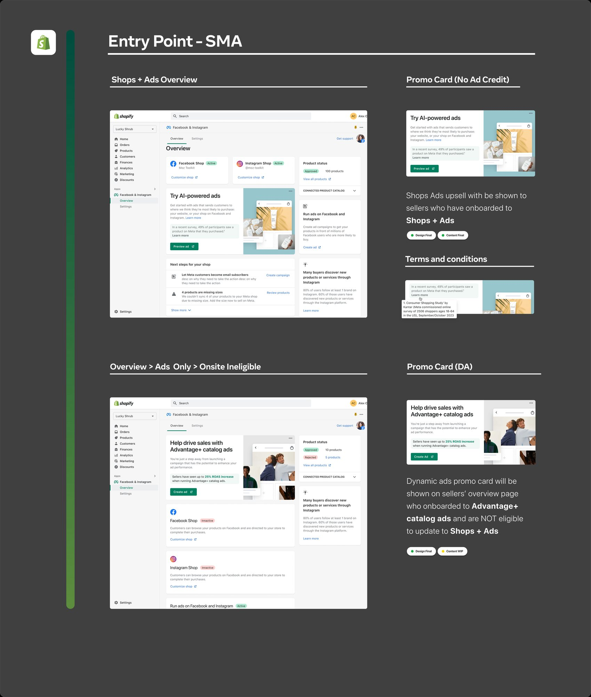
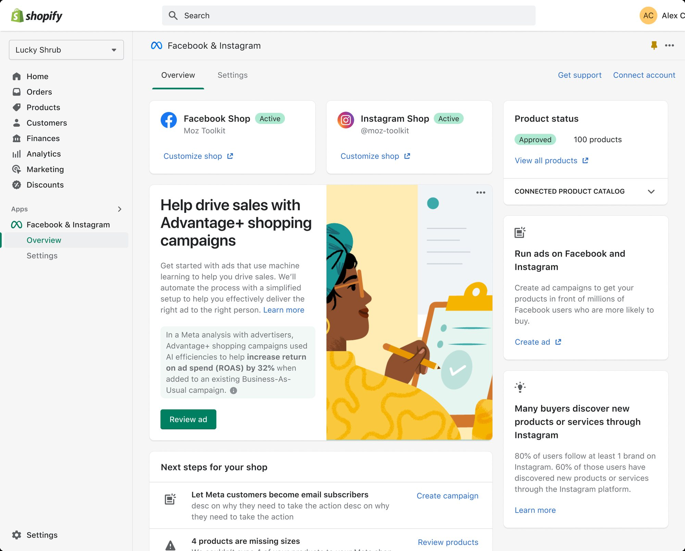
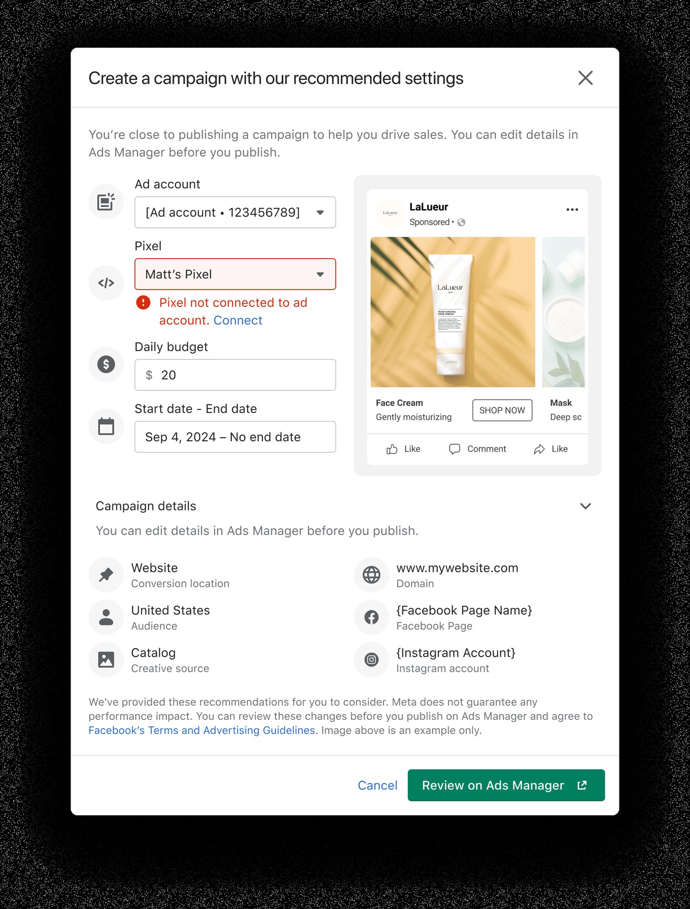
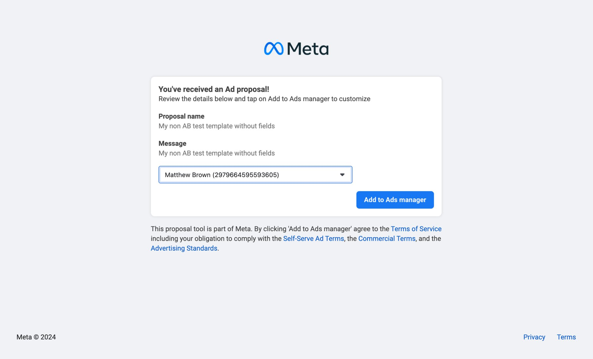
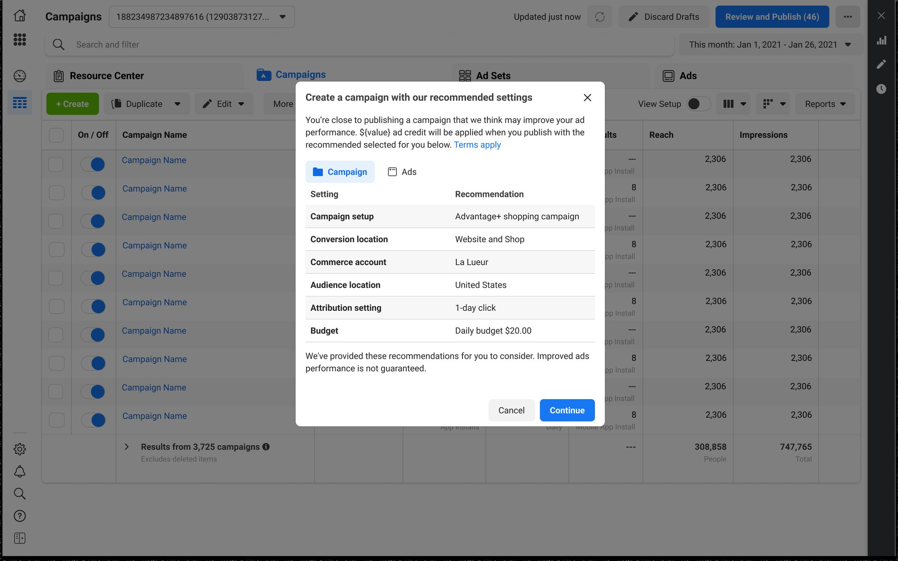

Driving growth through the ‘New Demand’ project
I led the design strategy for ‘New Demand’, a critical initiative focused on expanding market opportunities and refining the merchant experience within the Meta ecosystem.
Overview
During my tenure at Meta, I led the design strategy for the ‘New Demand’ project, a critical initiative focused on expanding market opportunities and refining the merchant experience within the Meta ecosystem. As a product designer on the team, I was responsible for navigating the complex intersection of advertiser needs and platform evolution.

The Challenge
The ‘New Demand’ project was born out of a need to capture emerging market segments and resolve persistent friction points for high-value users.
- Market friction, we identified significant drop-off points where merchants struggled to adopt new advertising tools.
- Design complexity, the project required a cohesive experience across a minimalist digital workspace while maintaining the robustness expected of Meta’s professional tools.
- Cross-functional leadership, I stepped in to provide strategic clarity and maintain project momentum during organisational shifts.
Strategic Approach
I divided the design efforts into targeted workstreams to address both immediate adoption and long-term retention.
1. Identifying growth levers, we audited the user journey to find “New Demand” opportunities, focusing on contextual delivery and native prompts that met users within their existing workflows.


- Contextual integration, we deployed clear, high-impact messaging within the app to reduce jargon and increase clarity.
- Native ecosystem prompts, utilising native-feeling desktop applications and mobile touchpoints ensured the project felt like an integrated part of the user’s workspace.


2. Streamlining the conversion funnel, I focused on reducing the cognitive load for merchants by shifting from manual configurations to guided, “ready-made” solutions.

Implementation & Collaboration
As a designer who values “quality guardianship,” I ensured that the ‘New Demand’ project met rigorous standards across all surfaces.
- Technical oversight, I worked closely with engineering teams to ensure that AI-powered design tools and automated workflows were seamlessly integrated.
- Systematic design, I maintained a single Source of Truth for the design library, ensuring that edge cases for varied merchant segments were handled with precision.

Results & Impact
The ‘New Demand’ initiative significantly bolstered Meta’s market position and improved merchant success metrics:
- TAM expansion, contributed to substantial growth in Total Addressable Market, exceeding initial projections through better user acquisition.
- Conversion optimisation, through the redesign of the onboarding flow, we saw a dramatic increase in conversion rates, moving from low single digits to high-performance benchmarks.
- Platform adoption, successfully migrated a significant percentage of the target market to the new experience, ensuring long-term deliverability for advertisers.

Reflection
This project reinforced the importance of being a design lead who can bridge the gap between complex engineering requirements and user-centric strategy. By focusing on systems thinking and proactive communication, we transformed a period of high change into a significant business win.